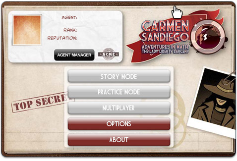

6 |
Jugando el juego por primera vez |
 |
|
En este juego, eres un detective de la agencia de detectives ACME. La misión de ACME es buscar a la villana, Carmen Sandiego y sus secuaces de V.I.L.E.
Tu trabajo es investigar crímenes cometidos por V.I.L.E. y encontrar bastantes pruebas para arrestar a Carmen Sandiego y a sus compinches.
Antes de que empieces el juego, tienes que crear tu personaje para el juego.

Cuando hayas creado el personaje del juego, puedes editar el nombre con el botón Editar agente (Edit Agent).
Usa el Creador de agentes (Agent Manager) para crear, eliminar o jugar con otros personajes.
Ahora que has creado tu personaje del juego, ya puedes usar todas las opciones del menú del juego. ¡Listo para jugar!
|
 |
 |
 |